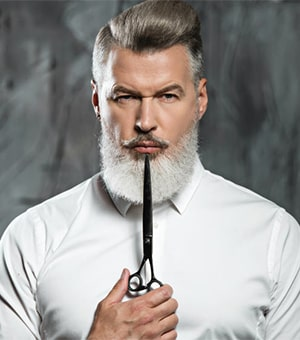
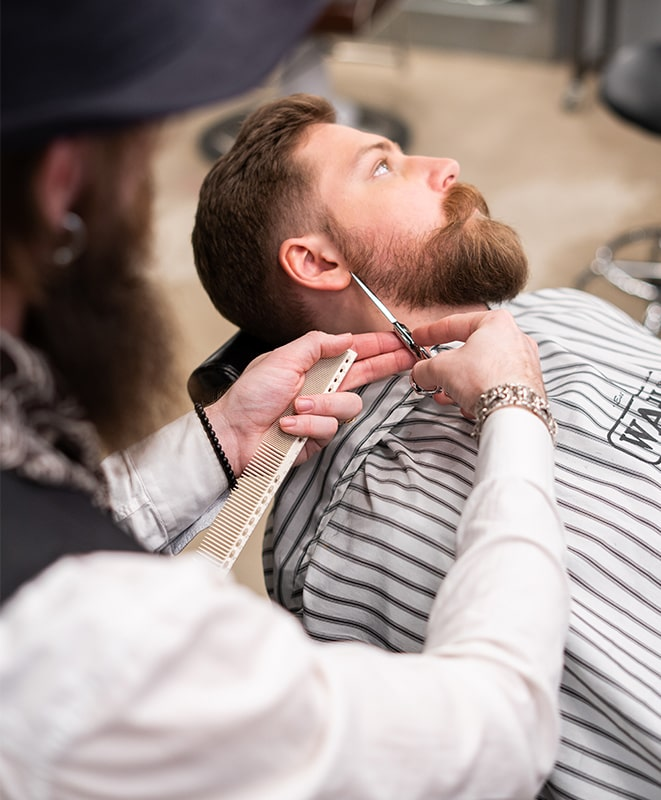
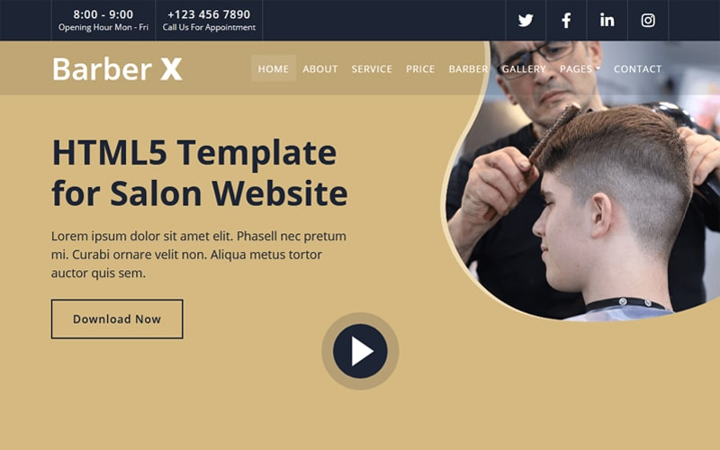

Vince Colombo
Master Barber
32 years behind the chair. A legend of the pompadour and the closest razor finish in town.
Sixty years, four chairs and one unbroken standard — the history of the shop on Main Street.


Razor & Tonic began in 1958 when Salvatore "Sal" Moretti hung a single striped pole above a storefront and promised every man the same thing — a cut that respected the shape of his head and the way he lived.
Three generations later, the chairs are still occupied by masters of the trade. We kept the rituals that deserve keeping: the warm towel before the razor, the straight-razor line work, the finished mirror handshake. And we kept the tonic — a cold drink at the end of every appointment, because a barbershop should feel like a club, not a queue.
What hasn't changed is the standard. Every fade is checked under a hand mirror, every shave is given the time it needs, and no one leaves until the barber is satisfied first.
Three convictions that decide how every appointment goes.
No shortcuts, no timers on the shave. The work is done when it's right — that's the only schedule we keep.
We remember your cut, your hairline and your coffee order. A barbershop should feel like home.
Only oils, balms and tonics we'd use on our own heads — nothing you don't need, nothing that doesn't work.
Four masters, four chairs, one standard.

32 years behind the chair. A legend of the pompadour and the closest razor finish in town.

Precision fades and razor-line beards. If it needs to be sharp, Theo is on it.

Texture, scissor work and the modern gentleman's cut. The style whisperer of the shop.

The straight razor is his instrument. Hot-towel shaves raised to a meditative art form.
Grab a seat, grab a tonic, and let a master barber handle the rest.
Book Your Visit